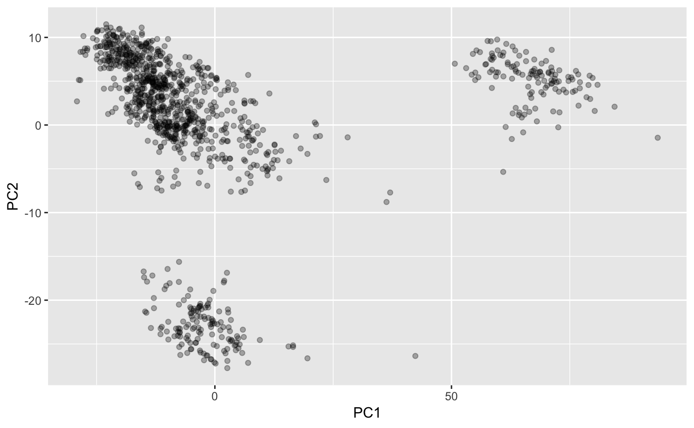

library(alndist)We use aligned mouse olfactory receptors as example. There are about 1000 of them. Aligned fasta file is provided as extdata in this package. Load these sequences.
or <- seqinr::read.fasta(system.file("extdata/mouseOR.fasta", package="alndist"), seqtype="AA")Get two sequences.
x <- as.character(or[[1]])
y <- as.character(or[[2]])
x # case doesn't matter
#> [1] "l" "e" "-" "-" "-" "-" "-" "f" "v" "l" "v" "g" "f" "-" "r" "l" "v"
#> [18] "h" "l" "q" "g" "i" "l" "f" "s" "l" "f" "l" "t" "v" "y" "l" "l" "t"
#> [35] "v" "a" "g" "n" "l" "l" "i" "v" "a" "l" "v" "s" "t" "d" "a" "a" "l"
#> [52] "q" "s" "p" "m" "y" "f" "f" "l" "r" "i" "l" "s" "a" "l" "e" "i" "c"
#> [69] "y" "t" "s" "v" "t" "v" "p" "l" "l" "l" "h" "h" "l" "l" "t" "g" "r"
#> [86] "r" "h" "i" "s" "r" "s" "g" "c" "a" "l" "q" "m" "f" "f" "f" "l" "f"
#> [103] "f" "g" "a" "t" "e" "c" "c" "l" "l" "a" "a" "m" "a" "y" "d" "r" "y"
#> [120] "a" "a" "i" "c" "e" "p" "l" "r" "y" "q" "v" "l" "l" "s" "r" "r" "v"
#> [137] "c" "v" "q" "l" "a" "g" "a" "a" "w" "s" "c" "g" "a" "l" "v" "g" "l"
#> [154] "g" "h" "t" "s" "f" "i" "f" "s" "l" "p" "f" "c" "g" "p" "n" "a" "v"
#> [171] "p" "h" "f" "f" "c" "e" "i" "q" "p" "v" "l" "q" "l" "v" "c" "g" "d"
#> [188] "t" "s" "l" "n" "e" "l" "q" "i" "l" "a" "a" "a" "l" "i" "i" "l" "c"
#> [205] "-" "p" "f" "g" "l" "i" "l" "s" "s" "y" "g" "r" "i" "l" "v" "t" "i"
#> [222] "f" "r" "i" "p" "s" "a" "a" "g" "r" "r" "k" "a" "f" "s" "t" "c" "s"
#> [239] "s" "h" "l" "v" "v" "v" "s" "l" "f" "y" "g" "t" "a" "i" "f" "i" "y"
#> [256] "i" "r" "p" "k" "a" "s" "p" "t" "t" "d" "p" "l" "l" "s" "l" "f" "y"
#> [273] "a" "v" "i" "t" "p" "i" "l" "n" "p" "v" "i" "y" "s" "l" "r" "n" "a"
#> [290] "d" "v" "k" "a" "a" "l" "k" "r" "s" "-" "i" "q" "k"Get the substitution matrix.
mtx <- get_substitute_mtx("PAM250")Calculate weighted distance between the two sequences.
weights <- rep(1, length(x)) # ideally should reflect your belief on the importance of each residue, all 1 here
two_seq_score(x, y, mtx, weights)
#> [1] 685The hope is to be able to calculate pairwise distances of larger number of sequences. Pairwise distances for all mouse olfactory receptors:
lst <- purrr::map(or, ~as.character(.x))
names(lst) <- purrr::map(or, ~attr(.x, "Annot"))
dist_mtx <- pairwise_score(lst, mtx, weights)This will actually lead to some clustering of receptors (e.g. compare with Figure 2 here http://stke.sciencemag.org/content/2/60/ra9)
dist_pca <- prcomp(dist_mtx, scale. = TRUE)
ggplot2::ggplot(as.data.frame(dist_pca$x), ggplot2::aes(PC1, PC2)) +
ggplot2::geom_point(alpha=0.3)
We can also try ~10k sequences, the time should still be reasonable. There’s also a parallel_pairwise_score to be used when there are multiple cores available. On my 2015 Macbook Pro they took ~ 1 minute and ~ 30 seconds respectively.
long_lst <- rep(lst, 10)
names(long_lst) <- 1:length(long_lst)
long_weights <- rep(1, length(long_lst))
system.time(dist_mtx <- pairwise_score(long_lst, mtx, weights))
#> user system elapsed
#> 76.132 0.429 76.818
system.time(dist_mtx_p <- parallel_pairwise_score(long_lst, mtx, weights))
#> user system elapsed
#> 213.714 2.593 35.685
identical(dist_mtx, dist_mtx_p)
#> [1] TRUEYou can further benchmark if interested. I’m not running this part.
microbenchmark::microbenchmark(dist_mtx <- pairwise_score(lst, mtx, weights))
microbenchmark::microbenchmark(dist_mtx_p <- parallel_pairwise_score(lst, mtx, weights))